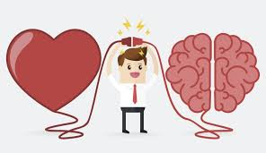
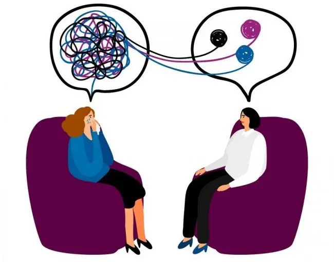

ORIENTACIÓN PERSONAL Y EMOCIONAL
La orientación en persona es aquella capacidad cognitiva que nos mantiene conectados con nuestro propio yo, con nuesqtra historia de vida y con nuestro presente. Es la capacidad que conforma nuestra identidad a través de la integración de todo tipo de información, tanto personal como autobiográfica.
La orientación personal nos permite saber en todo momento cómo nos llamamos, qué edad tenemos,cuál es nuestra fecha de nacimiento, cuál es o fue nuestra profesión, reconocer a nuestros familiares y seres queridos, así como recordar detalles de nuestra historia de vida.
También es un proceso profesional diseñado para asistir a las personas en el desarollo de su potencial personal, la toma de decisiones y la resolución de problemas que afectan su bienestar y calidad de vida. Se centra en el presente y en las fortalezas del individuo, con un enfoque preventivo y promocional. Es una ayuda o una necesidad en determinados momentos de la vida sus objetivos principales son los siguientes:
.- Apoyo en momentos de crisis:
Proporciona herramientas para afrontar situaciones estresantes o cambios significativos en la vida.
.- Desarollo personal:
Facilita el autoconocimiento y la identificación de fortalezas y áreas de mejora.
.- Mejora de habilidades sociales:
Ayuda a desarollar competencias para establecer relaciones interpersonales saludables.
.- Prevención de transtornos emocionales:
Al fortalecer la inteligencia emocional, se reducen las probabilidades de desarrollar problemas psicológicos.

BENEFICIOS DE LA ORIENTACIÓN PERSONAL Y EMOCIONAL
.- Aumento del bienestar personal:
Al expresar pensamientos y emociones en un entorno seguro, se promueve una sensación de alivio y claridad.
.- Resolución de conflictos:
Se adquieren herramientas para manejar disputas de manera efectiva, mejorando las relaciones interpersonales.
.- Prevención de crisis emocionales:
Al aprender a gestionar emociones, se disminuye la probabilidad de racaídas en estados de malestar.
.- Fortalecimiento de la autoestima:
Este proceso contribuye a una visión máas positiva de uno mismo.

La importancia de orientación emocional es esencial para el bienestar psicológico y social.
Las personas que poseen una alta orientación emocional tienden a tener relaciones interpersonales más satisfactorias y son más capaces de manejar el estrés y la diversidad.
En el contexto de la reconciliación, esta habilidad se convierte en una herramienta poderosa para abordar y resolver diferencias, promoviendo un ambiente de respeto y compresión mutua.